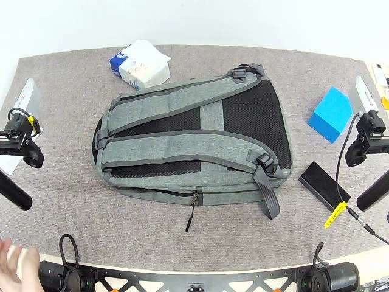
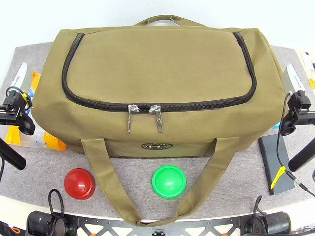

Phase-Conditioned VLA
Prepare the scene.
Rearrange the flexible bag to expose the zipper and make an approach feasible.
ESTABLISHESTarget accessibility
Learning an action is only the beginning.
WALLE learns actions and task knowledge from demonstrations. A shared Situation guides when skills can run, how they hand off, and which conditions to restore.



Each capability creates conditions
that another capability needs.
Rearrange the flexible bag to expose the zipper and make an approach feasible.
Localize the target and follow demonstration-guided grasp waypoints.
Verify acquired contact and compatibility with demonstrated continuation states before pulling.
Phase-segmented trajectories → Phase-Conditioned VLA training & progress prediction
Phase-level analysis → goals, dependencies, control references & handoff requirements
One shared Situation connects learning,
execution, and verification.
Parse demonstrations. Prepare phase-wise skills.
Task context · Phase contracts · Prepared skills
Open the zipper while maintaining stable support.
Observe. Execute. Verify. Recover.
From learning what to do, to understanding when and how.